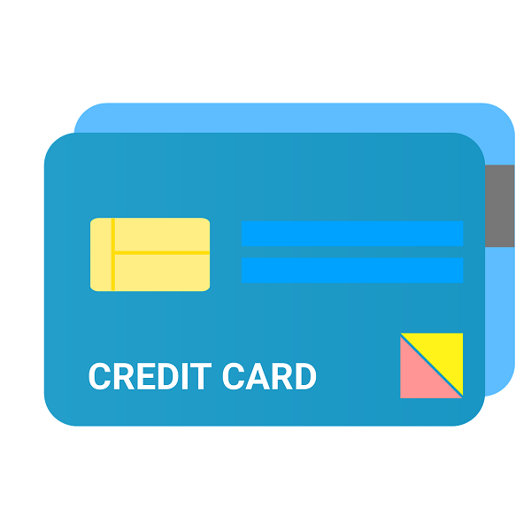

У сучасному світі фінансові інновації стали невід'ємною частиною нашого життя. Однією з таких інновацій є віртуальна картка з кредитним лімітом. Це зручний фінансовий інструмент, який надає користувачам можливість безпечно здійснювати покупки в Інтернеті та контролювати свої витрати. У цій статті ми розглянемо, що таке віртуальна картка з кредитним лімітом, які її переваги та недоліки, а також як її можна отримати та використовувати.
Віртуальна картка з кредитним лімітом - це цифрова картка, яка надається банками або фінансовими установами і використовується для онлайн-покупок та платежів. Від традиційної фізичної картки вона відрізняється тим, що існує тільки в цифровому форматі та не має фізичного носія. Ці картки мають всі необхідні реквізити, такі як номер картки, CVV-код та термін дії, які потрібні для здійснення операцій в Інтернеті.
Однією з основних переваг віртуальних карток є їхня безпека. Оскільки картка не має фізичного носія, ризик її втрати або крадіжки значно зменшується. Крім того, ви можете налаштувати обмеження на суми транзакцій та легко контролювати використання коштів.
Віртуальні картки дозволяють швидко і легко здійснювати покупки в Інтернеті. Вам не потрібно носити з собою фізичну картку або пам’ятати PIN-код. Усі необхідні дані завжди під рукою в мобільному додатку або в обліковому записі банку.
Віртуальні картки з кредитним лімітом дозволяють вам встановлювати власні обмеження на витрати. Це допомагає уникати надмірних витрат та краще планувати свій бюджет.
Ви можете використовувати віртуальні картки для різних цілей, включаючи покупки в Інтернеті, оплати послуг та підписки. Також можна створити кілька віртуальних карток для різних потреб, наприклад, для окремих підписок або певних категорій витрат.
Для деяких користувачів відсутність фізичної картки може бути недоліком, особливо якщо вони звикли здійснювати платежі в торгових точках за допомогою фізичної картки.
Віртуальні картки можуть бути недоступні для використання в деяких випадках, наприклад, для оренди автомобіля або бронювання готелю, де потрібна фізична картка.
Деякі банки можуть стягувати комісії за випуск та обслуговування віртуальної картки, що може стати додатковим витратам для користувача.
Отримання віртуальної картки з кредитним лімітом є досить простим процесом. Ось основні кроки:
Спочатку потрібно обрати банк або фінансову установу, яка надає послуги віртуальних карток. Варто звернути увагу на умови обслуговування, комісії та можливі бонуси або акції.
Після вибору банку вам потрібно буде подати заявку на отримання віртуальної картки. Це можна зробити онлайн через мобільний додаток або на офіційному сайті банку.
Після отримання віртуальної картки, ви зможете налаштувати кредитний ліміт, обмеження на витрати та інші параметри, які допоможуть вам контролювати використання коштів.
Основна сфера застосування віртуальних карток - це онлайн-покупки. Ви можете безпечно оплачувати товари та послуги в Інтернеті, використовуючи дані вашої віртуальної картки.
Віртуальні картки ідеально підходять для оплати підписок на стрімінгові сервіси, онлайн-курси, хмарні сховища та інші послуги.
Завдяки можливості встановлення обмежень на витрати, ви можете краще контролювати свої фінансові потоки та уникати непередбачених витрат.
Фізичні кредитні картки можуть бути більш зручними для використання в торгових точках, проте віртуальні картки пропонують вищий рівень безпеки для онлайн-транзакцій.
Якщо фізичну картку можуть вкрасти або загубити, то з віртуальною карткою такого ризику немає. Крім того, ви завжди можете змінити реквізити віртуальної картки в разі необхідності.
Віртуальні картки дозволяють швидко змінювати налаштування та обмеження, що може бути складніше зробити з фізичною карткою.
Перед тим як вибрати віртуальну картку, варто уважно ознайомитися з умовами банку, включаючи відсоткові ставки, комісії та умови використання.
Деякі банки пропонують бонуси або кешбек за використання віртуальних карток. Це може бути додатковою перевагою при виборі картки.
Важливо, щоб банк пропонував якісну підтримку клієнтів та зручний інтерфейс для управління віртуальною карткою через мобільний додаток або онлайн-кабінет.
Віртуальна картка з кредитним лімітом - це сучасний та зручний інструмент для онлайн-платежів та контролю витрат. Вона забезпечує високий рівень безпеки, дозволяє гнучко налаштовувати обмеження та зручна у використанні. Однак перед тим, як обрати віртуальну картку, варто уважно ознайомитися з умовами банку та врахувати всі можливі нюанси. З р